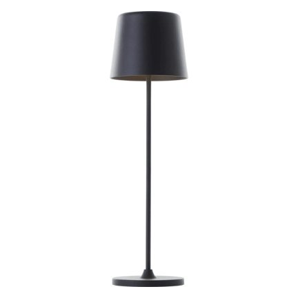
Reference image: Kaami · HORNBACH. Shows the product type, not the Chinese maker's product.
Cordless rechargeable table lamp, touch-dimmable, aluminium, 2,000 mAh, USB charging
Cordless aluminium table lamp for terrace, hospitality and bedside with three-level touch dimmer, warm-white light and a choice of battery size.
Specifications
| Material | Aluminium |
|---|---|
| Light source / colour | LED, 2,700 K warm white (customisable); three colour temperatures on request only |
| Control | Touch sensor, 3 brightness levels, 30-minute auto timer (per listing) |
| Battery | Lithium, 2,000 mAh standard, 5,200 mAh optional |
| Charging | USB (connector type not stated in the listing, request USB-C); optional wireless charging pad |
| Heights | S 20 cm, M 26 cm, L 35 cm |
| Protection | Not stated in the listing (request IP44 for outdoor use) |
| Certificates / lead time | RoHS, CE per listing; 15-20 days for neutral goods (manufacturer data) |
Internal
Details & contact
Made-in-China: Manufacturer/Factory & Trading Company, main product table lamps, founded 12.12.2018; self-declared: own moulds and workshop, predecessor company as mould maker since 2010, OEM/ODM with logo; address per profile Xiuquan Street, Aiming Road, Guangzhou (factory not independently verified).
Alternative manufacturers (1)
Made-in-China: per profile an integrated manufacturer and trader of decorative lighting since 2007, production site in Zhongshan (Guangdong), office in the International Trade Market Yiwu (Zhejiang); listing GL1051 (metal cordless lamp, touch, 3 levels, IP54, 80 lm, CE/FCC/RoHS, USD 3.31-3.57).
More
The China lamp with aluminium body and 2,000 mAh sits in the upper segment of hospitality lamps, the Kaufland prices of about EUR 17-20 for simple touch cordless lamps (market scan) are an entry level. Between USD 10.50-12.50 ex works and EUR 18.95 gross little margin remains after freight (battery as dangerous goods), duty (2.7%), import VAT and platform fees; calculate landed cost before ordering.
- Landed cost
- €10.95
- Selling price (net)
- €13.54
- Margin
- €2.59 · 19.1%
- Target price China
- €8.73
- Saving vs. buying in Germany
- 31.2%
- Minimum order
- 25 pcs
- Price basis
- EXW
per unit, net. China prices are list prices (not negotiated). Freight, duty and handling are assumptions; import VAT is deductible as input tax. Assumptions: freight by product group, 3 % handling, selling 15 % below the German market price, target margin 25 %.
Description
The cordless aluminium table lamp is dimmed by a touch sensor in three brightness levels and switches itself off with a 30-minute timer.
More
Model RSJ-C002 from Guangzhou Raiseking is available in three heights (20, 26 and 35 cm), comes with a 2,000 mAh battery as standard (optionally 5,200 mAh) and a warm-white colour of 2,700 K that can be customised; a version with a wireless charging pad is available on request. Raiseking states that it has its own moulds and workshop and offers OEM/ODM with logo. Discerning buyers look for proven battery safety (UN 38.3, IEC 62133-2), IP protection for outdoor use, measured runtime per brightness level and a cleanly finished, corrosion-resistant aluminium body.
Customs
| Tariff code | 94052190 |
|---|---|
| Duty rate | 2.7 % |
Standards & marks (Germany/EU)
GPSR (EU) 2023/988General product safety: EU responsible person, traceability and warnings, mandatory for online salesEN 60598-1, EN 60598-2-4, EN 62368-1Luminaire safety for portable luminaires as state of the art; charger/USB power supply under LVD 2014/35/EUBatterien (EU) 2023/1542, BattG, IEC 62133-2, UN 38.3Battery safety, labelling, take-back and dangerous-goods transport test for lithium cellsEMV 2014/30/EU, EN IEC 55015, EN 61547Emission and immunity of lighting equipment (RED + EN 303 417 for a wireless charging pad)EN 60529 (IP44)Degree of protection against splashing water and foreign bodies for outdoor use including the charging portRoHS 2011/65/EU, REACH, ElektroG, VerpackGSubstance restrictions, registration with stiftung ear (WEEE) and the LUCID packaging register
Internal · notes
E-commerce potential
Market scan: Kaufland lists about 1,400 cordless table lamps, touch-dimmable models with three colour temperatures cost about EUR 17-20 there …
More
one model carries the bestseller label at EUR 19.99; an aluminium model with 2,000 mAh, USB-C and up to 48 h runtime is explicitly advertised for terrace and restaurant use, and Zara sells a cordless ceramic lamp (category pages, not rechecked). At HORNBACH (02.11.2026) the LED cordless outdoor table lamp Kaami (2 W, 310 lm, 3,000 K, dimmable, H 37 cm) costs EUR 18.95, the solar rechargeable table lamp with USB-C EUR 9.95 and the premium Tavola (IP54, touch dimmer) EUR 52.95. The range shows heavy price pressure at entry level and room for hospitality quality. Return and battery risks (transport as dangerous goods, capacity deviation, charging port) are higher than for mains lamps; season spring to autumn plus Christmas trade.
Request from the supplier
- Prove the battery: cell maker, UN 38.3 test summary and IEC/EN 62133-2 for cell and pack, protection circuit (over/under-discharge, short circuit); measured capacity and runtime per brightness level and at 100% (the listing gives no hours).
- Clarify the IP rating: the listing gives no IP class; for terrace and hospitality demand IP44 by test report (EN 60529) including a sealed charging port.
- Specify colour and optics: 2,700 K fixed or three colour temperatures (e.g. 2,700/3,500/4,000 K), luminous flux, flicker-free dimming, touch sensitivity; fix USB-C and charging time in writing.
- Request test reports (EN 60598-1/-2-4 or a GPSR safety assessment, EN 62368-1 for the charger, EMC EN IEC 55015, RoHS; for a wireless charging pad RED with EN 303 417); the reports must name RSJ-C002.
- Check series samples: stability (tilt test), aluminium finish (anodising/powder coating) and salt-spray test for outdoor use, drop test, scratch resistance; record batch tolerances.
- Clarify commercials: confirm the tier prices (listing: USD 12.50 down to 10.50), sample cost (listing: no MOQ for the first sample), neutral packaging or own brand, GPSR details, BattG/LUCID/stiftung ear and labelling under the Batteries Regulation (EU) 2023/1542 (check the stages from 18.08.2026 and 18.02.2027).
Sources
Price per lamp, tiers USD 12.50 / 11.50 / 11.00 / 10.50 from 25, 100, 1,000 and 3,000 pcs. Height (S/M/L) and battery (2,000 or 5,200 mAh) influence the price, the listing names no surcharge. Per the profile, prices are EXW for small quantities. Sample price: no MOQ for the first sample. Page retrieved 02.11.2026.
Goes well with
Accessories, consumables and products that sellers sell together with this item.
More products in this category
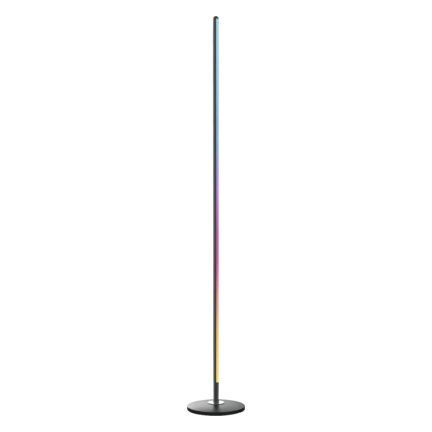
Trend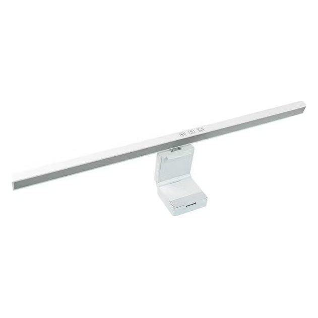
Upsell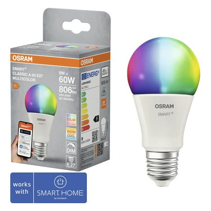
Trend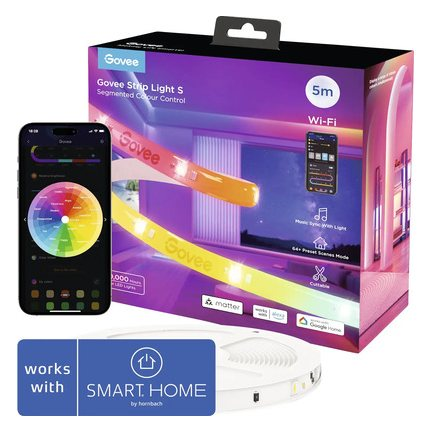
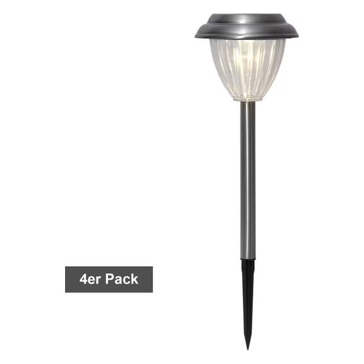
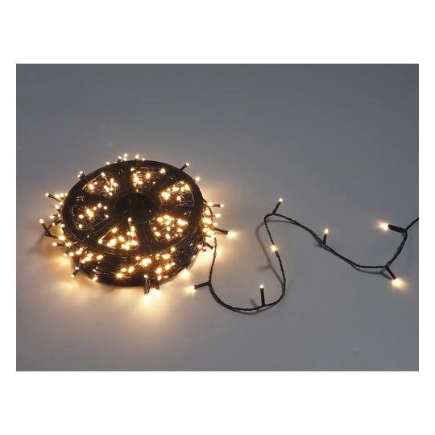
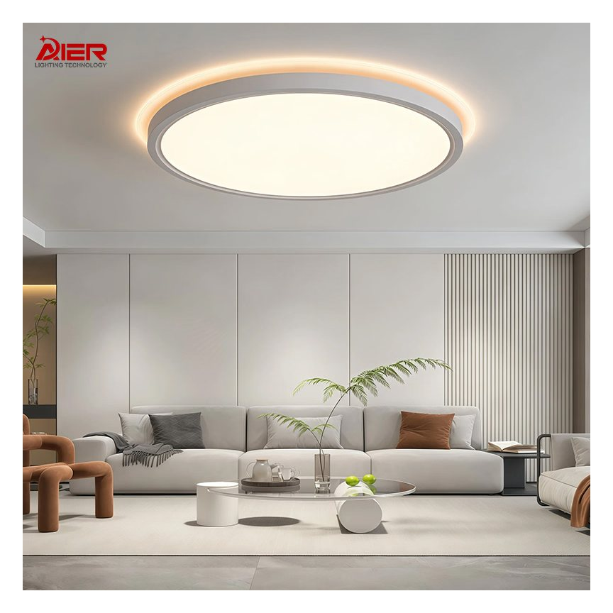
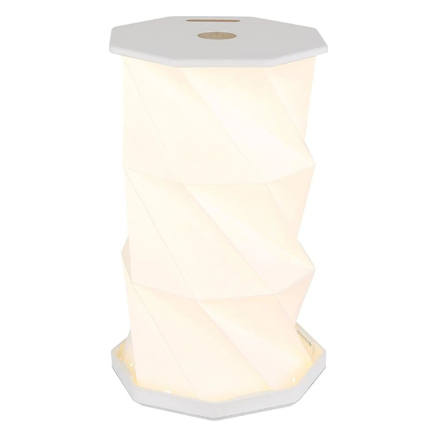
Cross-sell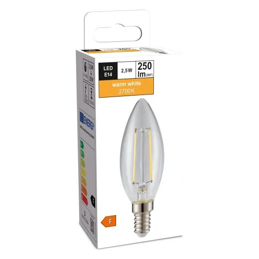
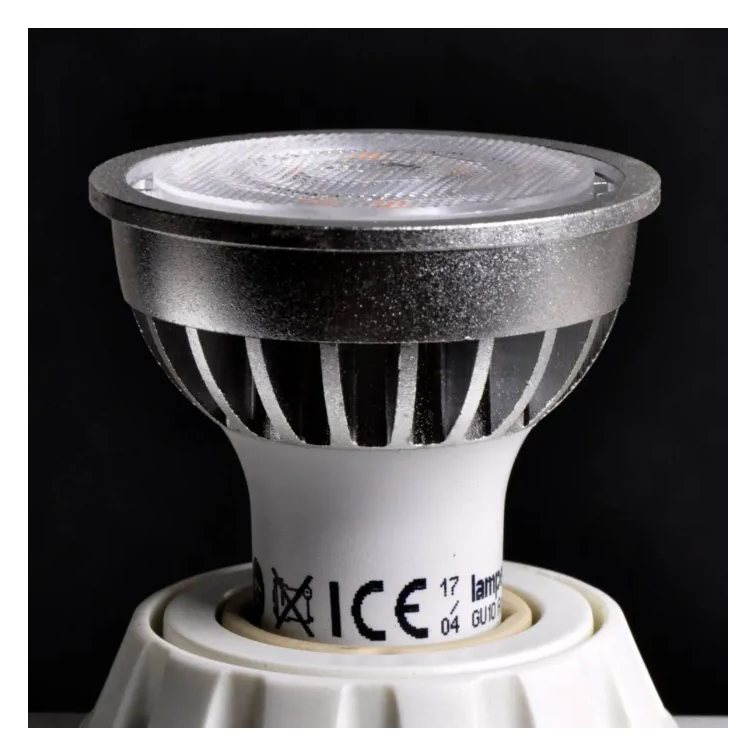
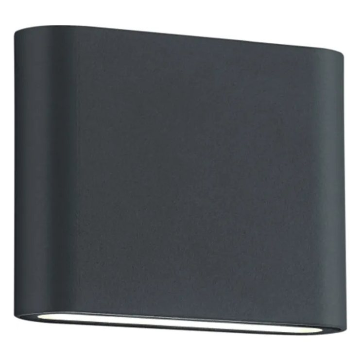
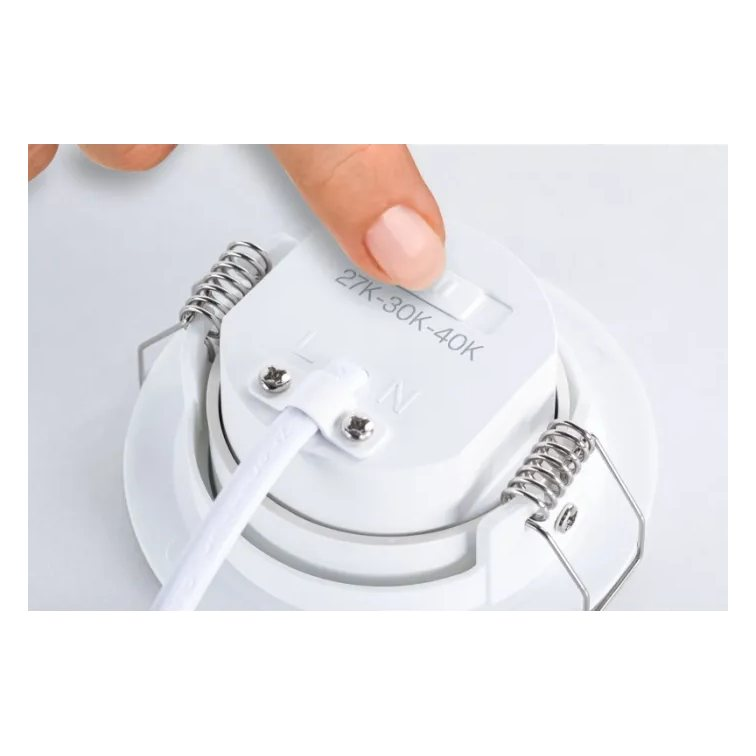
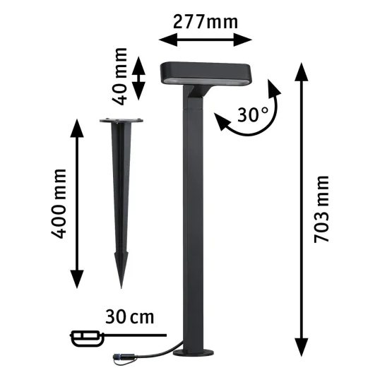
Trend